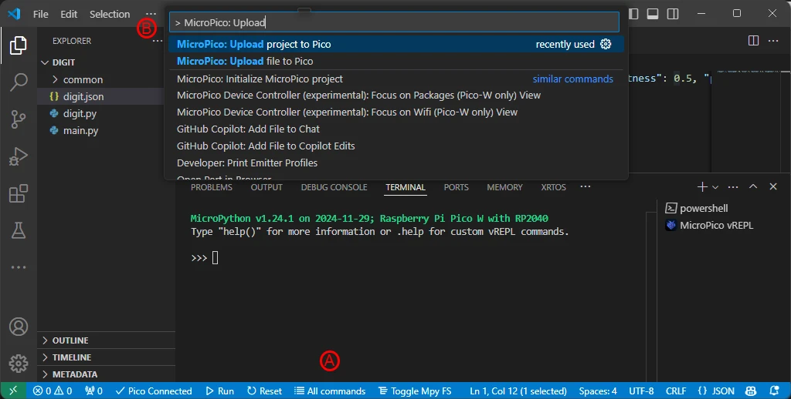
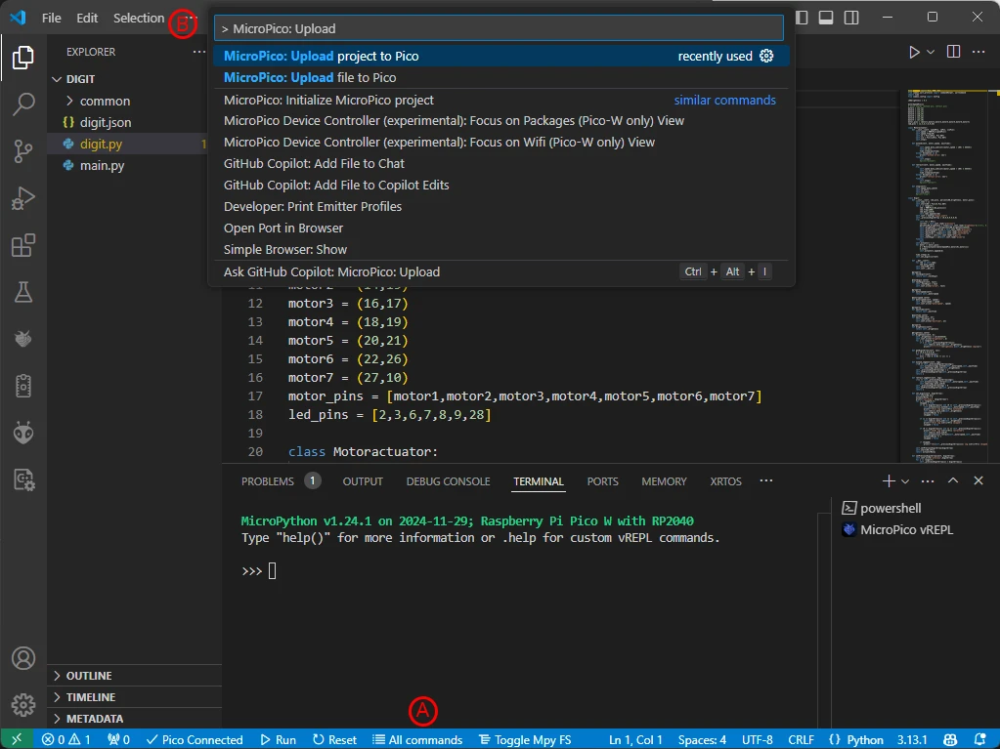

Digit PCB Test
Run the tests in this section after assembling each digit PCB to ensure all the components on the PCB are properly soldered into place and functional. Any defective electronic component on the digit PCB will need to be replaced before completing the project.
Prerequisites
- Created a fork of the Kinetic-Display GitHub repository, see Software and Microcontroller Preparation
- Deployed the digit directory, also see Software and Microcontroller Preparation
Configure and Deploy the Digit Project
- Connect your Computer to the digit PCB Pico per the instructions on Verify Micropython on your Raspberry Pi Pico
- From VS Code, select File->Open Folder... and open the deploy/digit folder you deployed during step 4 in the section Install Git, Fork and Clone the Repository
- Following the screen capture below, select the Explorer icon (A) in the left Activity bar. Click the digit.json file (B) in the Explorer pane. Change the "digit": value (C) to match the PCB labelled number 0-3. It is very important to have the digit value match the PCB's labelled value. 
- Following the screen capture below, click All Commands (A) on the status bar. In the Command text field (B), type "Upload" after "> MicroPico: ", then select the dropdown MicroPico: Upload project to Pico. 
- Verify the project was uploaded into the Pico.